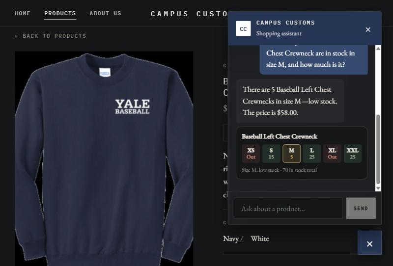
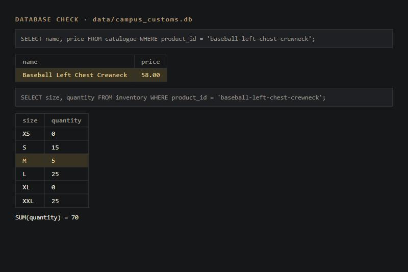
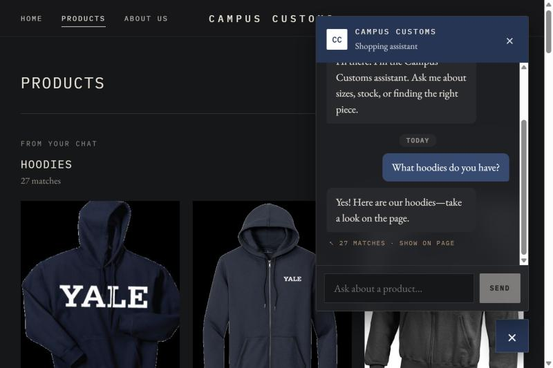
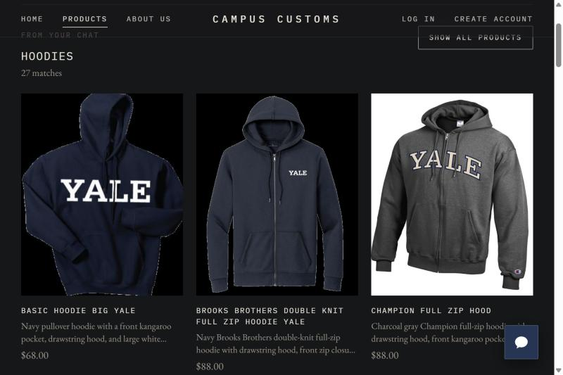
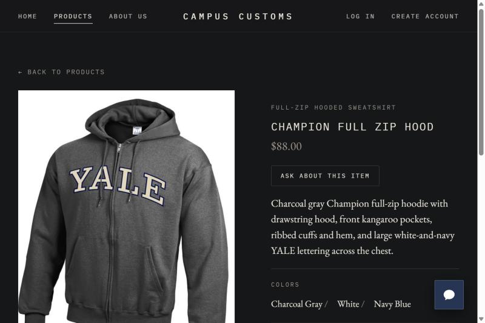
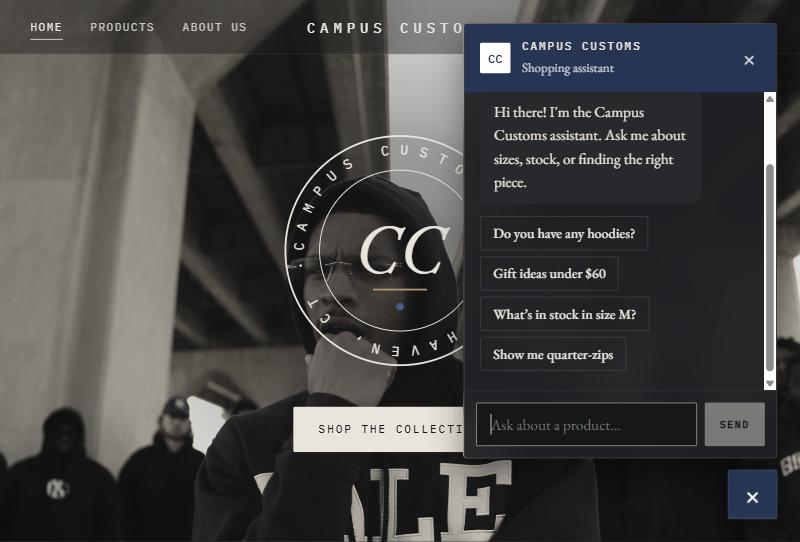
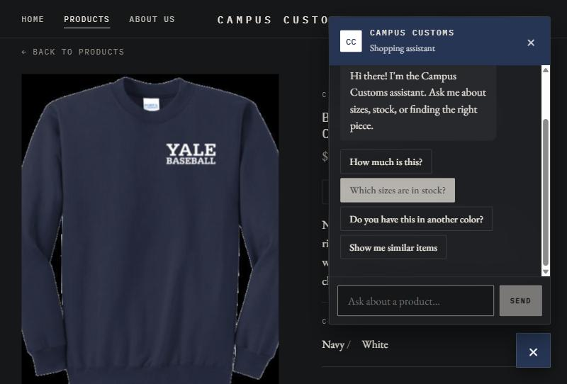

Campus Customs — App Check
| # | Check | Result |
|---|---|---|
| 1 | Chat agent reports an item's inventory level and price, and both match the database | PASS |
| 2 | Asking about hoodies makes dynamic search-result cards appear on the page | PASS |
| 3 | Problem 9 feature: one-tap starter questions appear before the user types anything | PASS |
Check 1 — Inventory level and price match the database PASS
- Opened the Baseball Left Chest Crewneck page and the chat.
- Asked: "How many of the Baseball Left Chest Crewneck are in stock in size M, and how much is it?"
- Queried
campus_customs.dbdirectly and compared.


campus_customs.db directly gives the same price (58.00) and stock (M = 5, total 70).
Agent vs. database
| Field | Agent said | Database | Match |
|---|---|---|---|
| Price | $58.00 | 58.0 | ✓ |
| Size M quantity | 5 (low stock) | 5 | ✓ |
| XS / XL | Out / Out | 0 / 0 | ✓ |
| S / L / XXL | 15 / 25 / 25 | 15 / 25 / 25 | ✓ |
| Total in stock | 70 | 70 | ✓ |
Check 2 — Hoodie question shows dynamic search-result cards PASS
- Started on the home page and opened the chat.
- Asked: "What hoodies do you have?"
- Watched the page update, then clicked a result card.



Check 3 — Problem 9 feature: one-tap starter questions PASS
This is usability improvement #1 from Problem 9 (output/usability.md): the "Ask about this item"
button plus one-tap starter questions that show before the shopper types anything.
- Opened the chat on the home page without typing anything.
- Opened the chat again from a product page using "Ask about this item".

